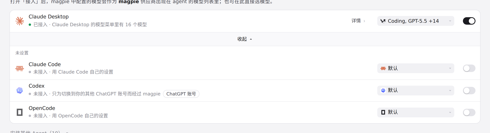
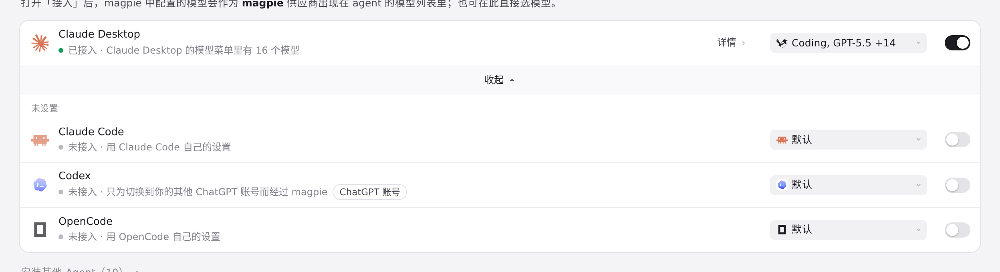
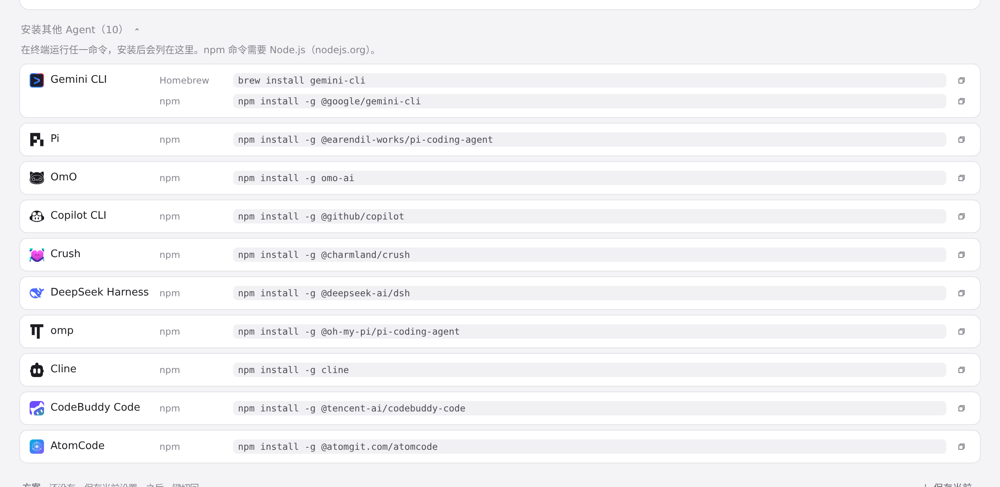

#1128 界面预览
commit c1a4ca8 · 回到 PR · 本次改动让 Bub 成为 magpie 支持的 Agent：Agent 页（以及快捷面板）多出 Bub 一行，带 Bub 的 logo 图标，并给它两个可编辑字段——model（可选自家模型，也可选 magpie 的模型）与 effort（reasoning effort）。选 magpie 的模型时会把 magpie 作为 provider 写进 ~/.bub/config.yml；Bub 未安装时则出现在「安装其他 Agent」列表里。
红线是鼠标走过的轨迹，红色圆环是一次点击；底部文字是这一步在做什么。空格暂停，← → 逐段查看。

Agent 列表里的 Bub · 展开后的 Agent 列表
 Agent 列表里的 Bub · 安装列表
Agent 列表里的 Bub · 安装列表

Bub 的模型与 effort 选择 · 展开后的 Agent 列表
 Bub 的模型与 effort 选择 · 展开后的 Agent 列表
Bub 的模型与 effort 选择 · 展开后的 Agent 列表

Bub 的模型与 effort 选择 · 「安装其他 Agent」列表